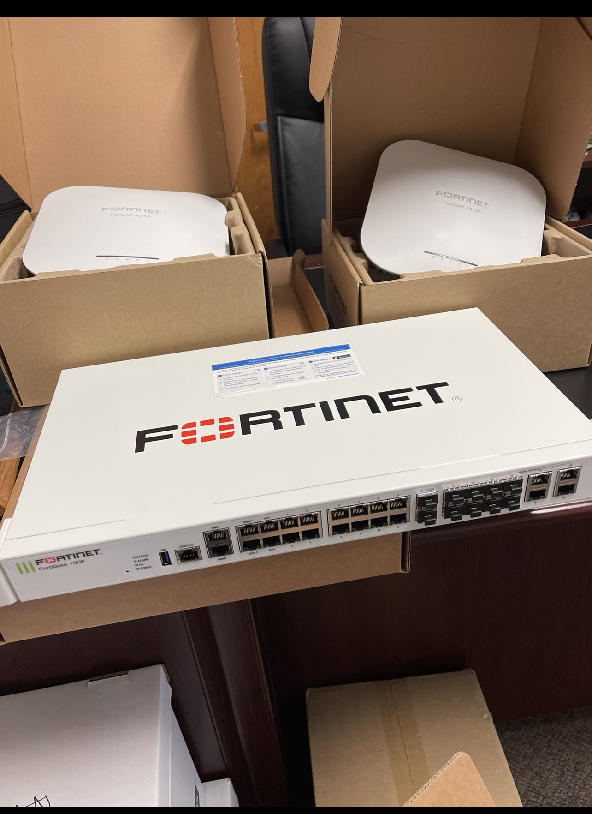
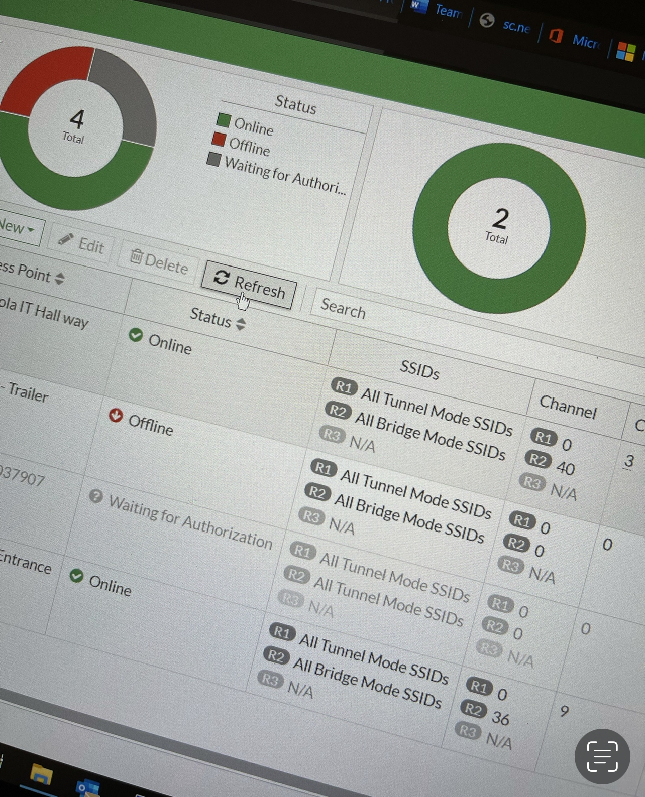
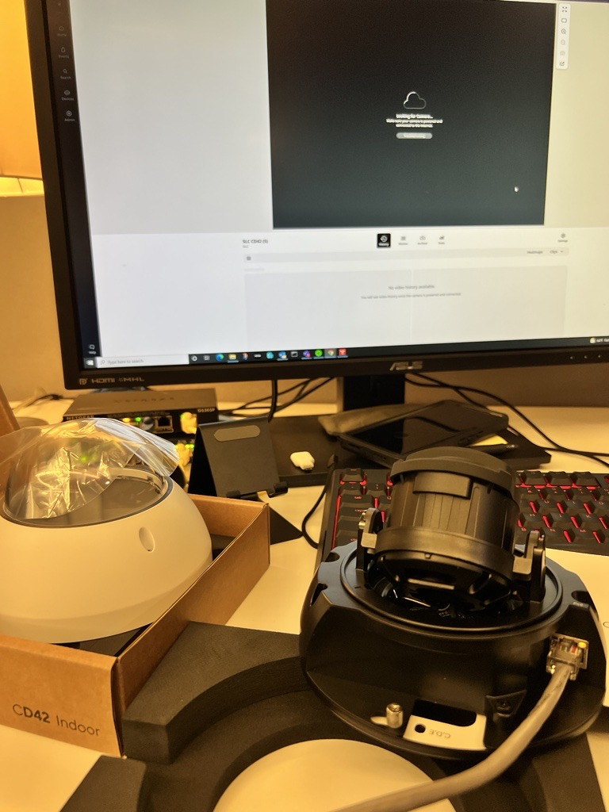
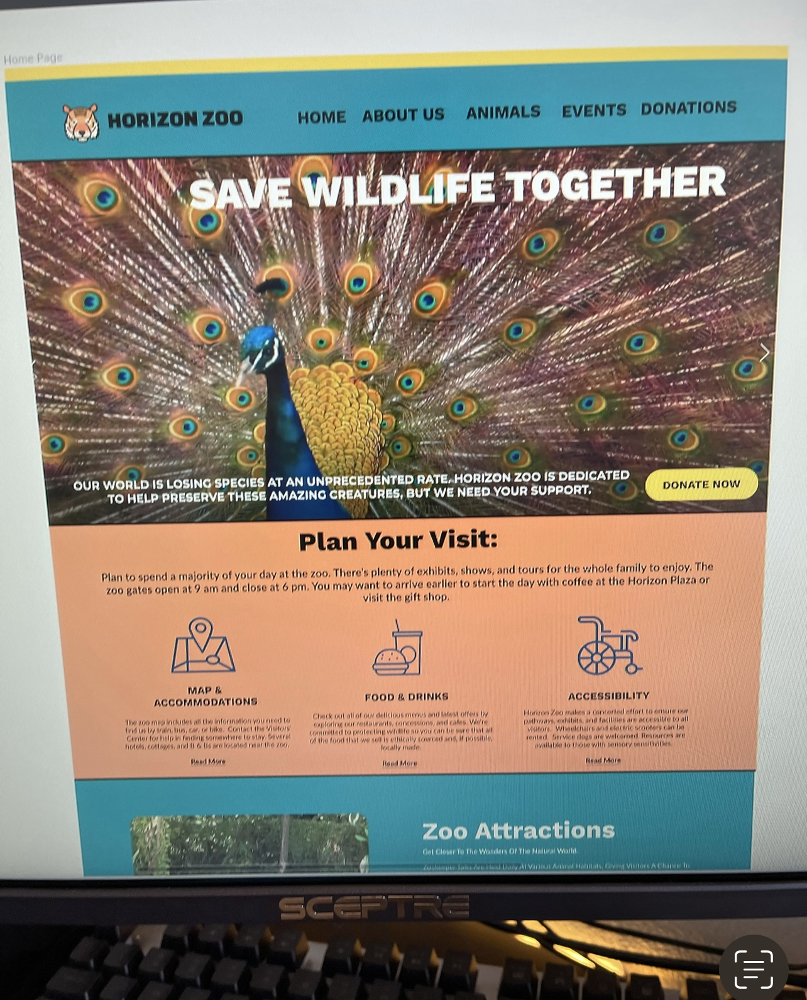
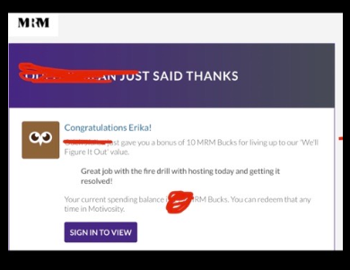
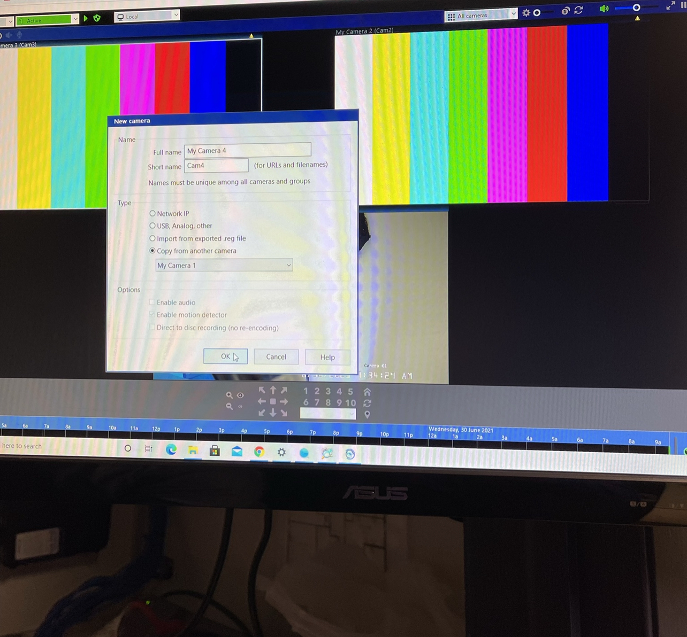
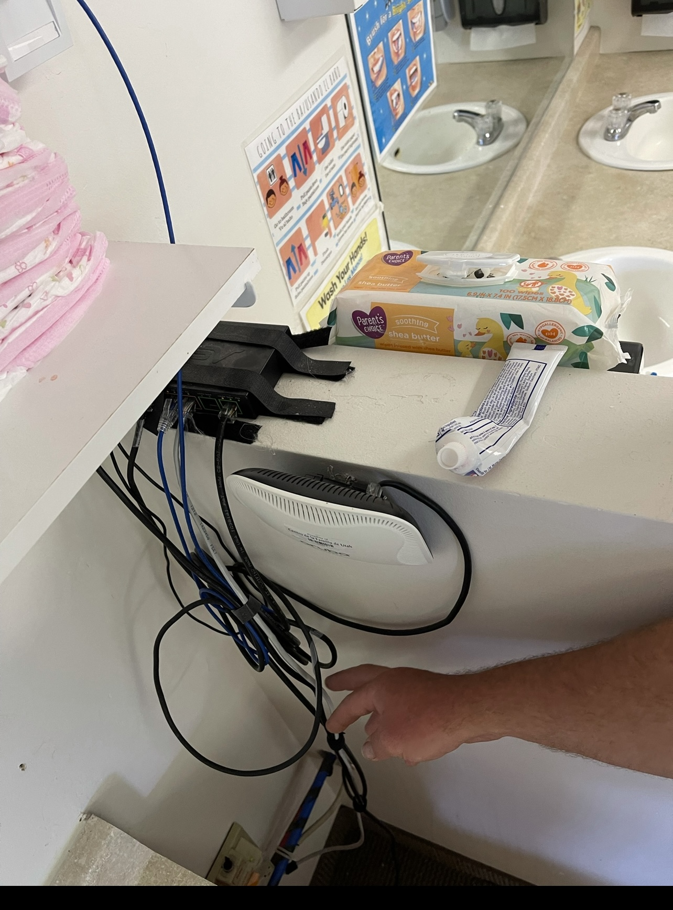

Career Highlights
Driving IT Operations, Cybersecurity, and Team Success
Erika Hernandez brings together IT operations, cybersecurity, infrastructure support, and people-first leadership to help organizations build stronger, safer, and more reliable technology environments.
Her career has focused on improving service delivery, supporting multi-site operations, strengthening security practices, and helping technical and non-technical teams work together more effectively. Whether leading infrastructure improvements, mentoring staff, coordinating with vendors, or aligning IT priorities with business needs, Erika approaches every challenge with clarity, accountability, and practical execution.
She is known for stepping into complex environments, identifying what needs to improve, and helping teams move forward with structure and confidence. Her leadership style is built on trust, communication, consistency, and a strong belief that technology should support both business goals and the people who rely on it.
IT leadership is not just about fixing systems — it is about improving operations, reducing risk, supporting people, and building technology environments that can grow.
Driving Technology, Security, and Operational Excellence Through Leadership and Collaboration
Erika Hernandez is an IT and cybersecurity leader with experience supporting enterprise infrastructure, multi-site operations, compliance initiatives, and technical teams across healthcare, education, and business environments. Her background combines hands-on technical expertise with strategic leadership, allowing her to bridge the gap between operational execution and organizational goals.
Throughout her career, Erika has led infrastructure modernization efforts, cybersecurity initiatives, vendor management programs, and operational improvements designed to increase reliability, scalability, and security across complex IT environments. She is recognized for bringing structure to fast-moving environments while maintaining a strong focus on communication, collaboration, and long-term operational success.
Her professional experience includes:
• IT Operations & Infrastructure Management
• Cybersecurity & Risk Management
• Service Desk Leadership & Process Improvement
• SOX, HIPAA & ITGC Compliance Initiatives
• Multi-Site Infrastructure Support
• Vendor Management & Cost Optimization
• Technical Training & Workforce Development
• Project Management & Operational Strategy
Erika has supported environments involving LAN/WAN networking, cloud platforms, endpoint security, virtualization, identity management, disaster recovery planning, and operational security improvements. She has also collaborated with executives, technical teams, vendors, and end users to align IT initiatives with broader business priorities.
With experience in both leadership and hands-on technical roles, Erika brings a balanced approach focused on accountability, adaptability, and continuous improvement — helping organizations strengthen technology operations while building strong, collaborative teams.
Core Skills & Expertise
Technical Expertise
- IT Infrastructure & Systems Administration
- Microsoft 365 & Azure AD
- Cloud & Hybrid Environment Support
- Active Directory, DNS & DHCP
- Cybersecurity & Endpoint Protection
- Network Security & Risk Management
- Patch Management & System Hardening
- PowerShell, Python & Bash Scripting
- Virtualization (Hyper-V, VirtualBox, VMware)
- Monitoring & Management Tools (Nagios, NinjaOne, Jira)
- Incident Response & Troubleshooting
- Compliance Frameworks (SOX, HIPAA, ITGC, NIST, CIS)
Leadership & Operations
- IT Operations & Service Delivery Leadership
- Cross-Functional Team Collaboration
- Project & Change Management
- Vendor Management & Contract Negotiation
- Budget Planning & Cost Optimization
- Process Improvement & Operational Efficiency
- Technical Training & Workforce Development
- Executive & Stakeholder Communication
- Policy Development & Governance
- Business Continuity & Disaster Recovery Planning
- Bilingual Communication (English & Spanish)
- Mentorship & Team Development
Professional Feedback
“You have a lot of great potential and would be a huge asset to MRM.”
A Glimpse Into My IT & Cybersecurity Journey
This section highlights projects, infrastructure improvements, teaching experiences, and technical environments that have shaped my career in IT and cybersecurity. From server room cleanups and infrastructure upgrades to classroom instruction and operational support, each project reflects a commitment to continuous improvement, problem-solving, and practical leadership.
My experience spans infrastructure management, cybersecurity operations, technical instruction, service delivery, and project coordination across healthcare, higher education, and enterprise environments. Whether supporting end users, modernizing systems, mentoring students, or strengthening operational processes, I approach every project with a focus on reliability, scalability, and long-term impact.
These experiences represent more than technical work — they reflect a passion for building secure systems, improving operations, and helping people navigate technology with confidence.





Cost Optimization & Vendor Management
Erika has consistently identified opportunities to reduce waste, improve vendor accountability, and align technology spending with business needs. Across multiple roles, she has reviewed cloud usage, software licensing, vendor contracts, and recurring technology expenses to find practical ways to reduce costs without weakening operations.
One example included identifying and shutting down unused AWS resources, helping reduce unnecessary monthly cloud spend. She has also supported software audits, licensing reviews, ISP consolidation, and vendor standardization efforts that improved cost visibility and strengthened long-term IT planning.
Her approach to cost optimization is not just about cutting expenses. It is about making sure technology investments support reliability, security, scalability, and business value.
Enterprise System Cleanup & Software Integration

These projects required detailed planning, documentation, cross-functional communication, and change management to reduce disruption while improving security, usability, and operational consistency. By cleaning up outdated systems and standardizing processes, she helped create environments that were easier to manage, more secure, and better aligned with organizational needs.
This work reflects her ability to take messy or fragmented systems and turn them into more structured, reliable, and scalable technology environments.
Infrastructure Built for Reliability, Safety, and Scale

Her infrastructure work focuses on more than appearance. A well-organized IT environment improves troubleshooting, reduces downtime, supports documentation, and helps future technicians understand and maintain systems more effectively.
Whether supporting a new site, improving an existing environment, or correcting years of neglected infrastructure, Erika brings a practical, hands-on approach focused on stability, security, and operational efficiency.
Interactive Port Scanner Demo
This safe demo simulates how IT and cybersecurity professionals check common ports to understand what services may be running on a system.